2026-10-14 实测。原截断口径：95条非空参考NLL降低25.6%；原始96条降幅30.5%受空参考影响。完整保留问题后，95条NLL降低28.8%。指令诊断13/16→13/16，未见净提升。现有预处理只有17/96条保留完整问题，需先修复截断。数据与脚本均保留在本目录。
7页会议汇报 PowerPoint · PDF · 40组逐题完整回答对比 · 完整量化汇总
01–09及12、14、15为分析图；10、11、13为会议投影用的大字号版本。全部图表可点击打开PNG原图。参考答案未专家复核，验证集参与选模，本轮不提供事实准确率结论。
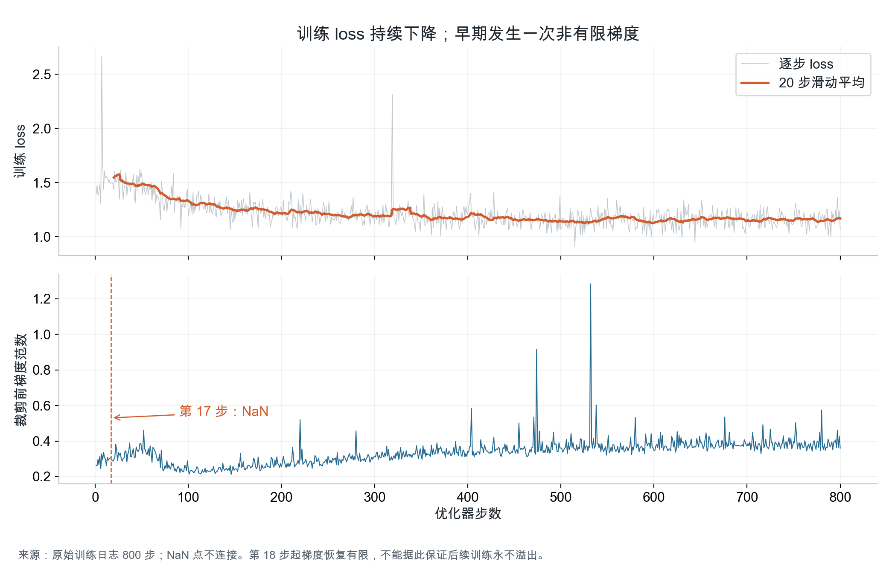
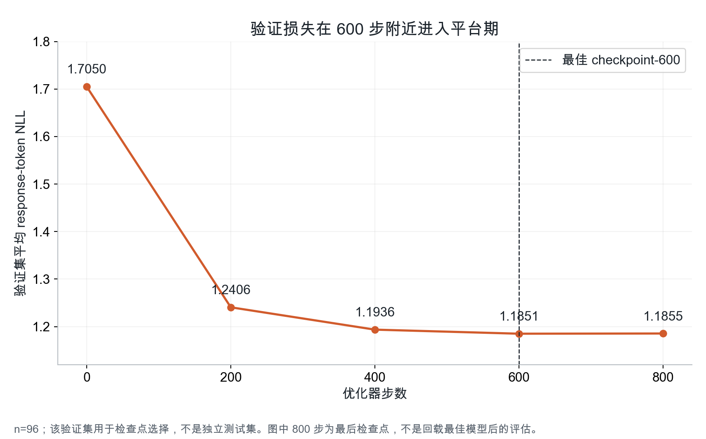
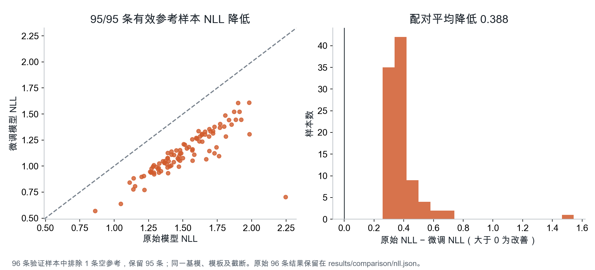
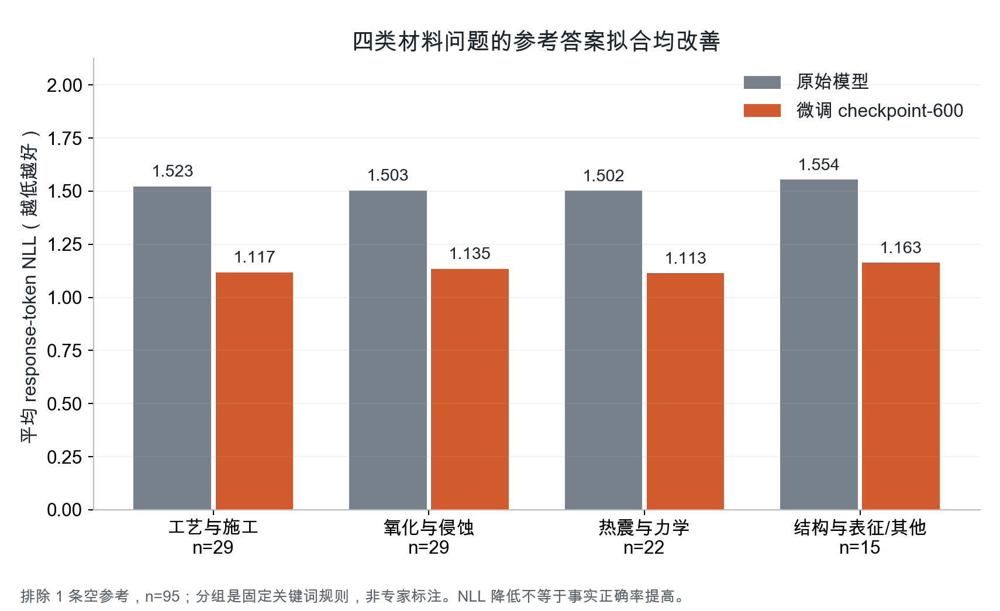
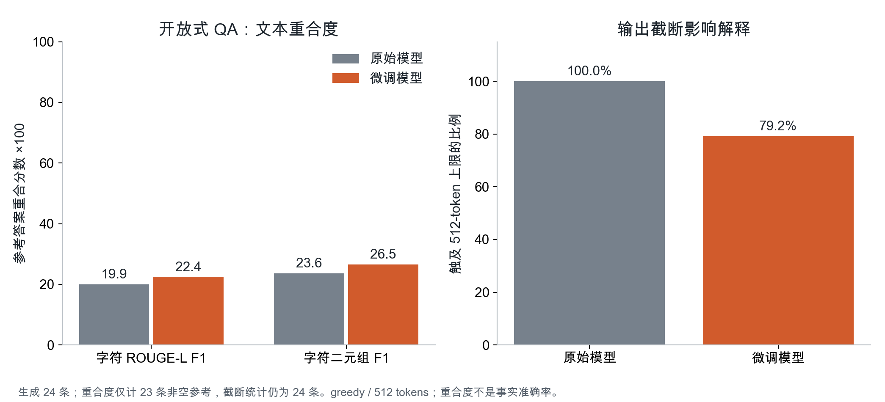
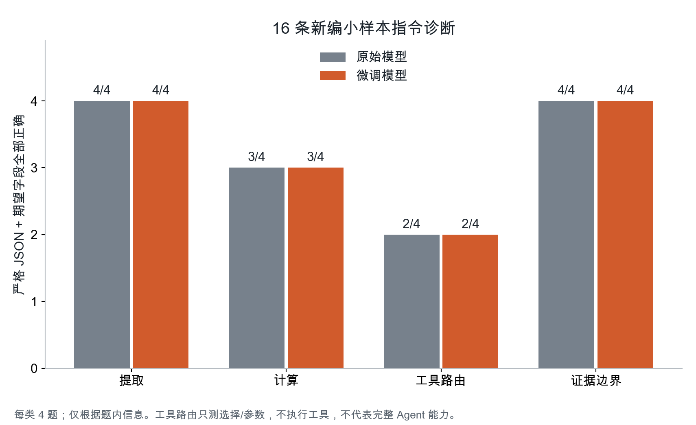
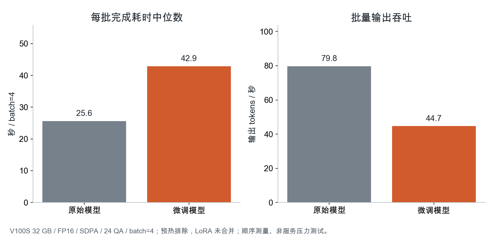
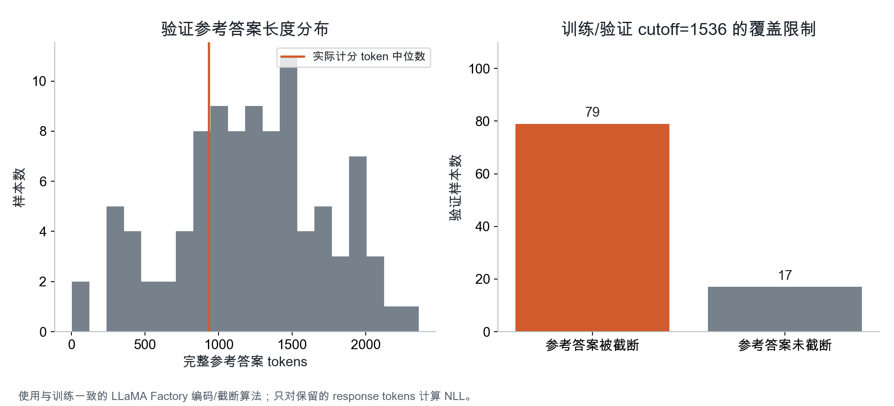
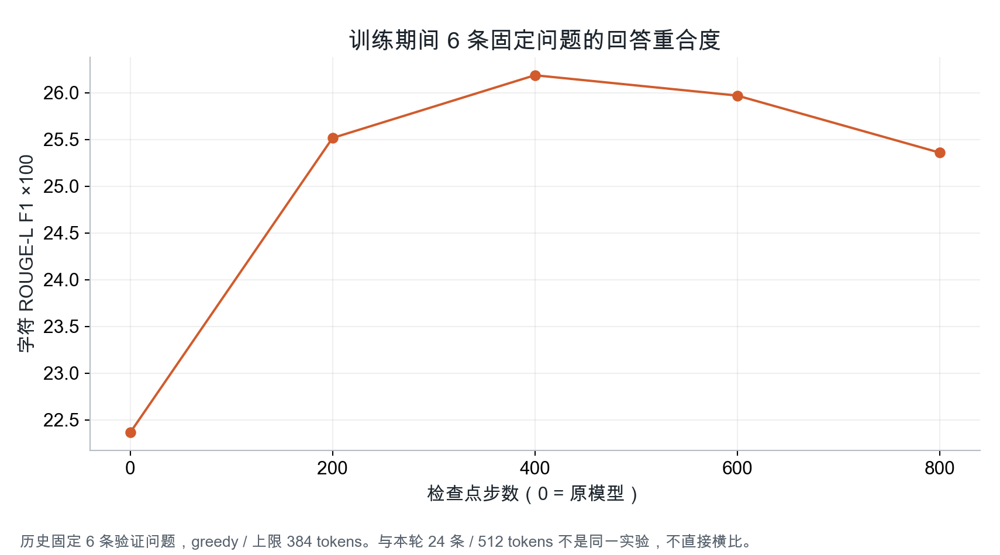
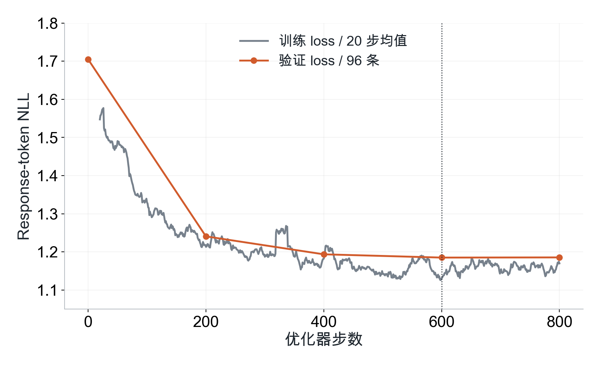
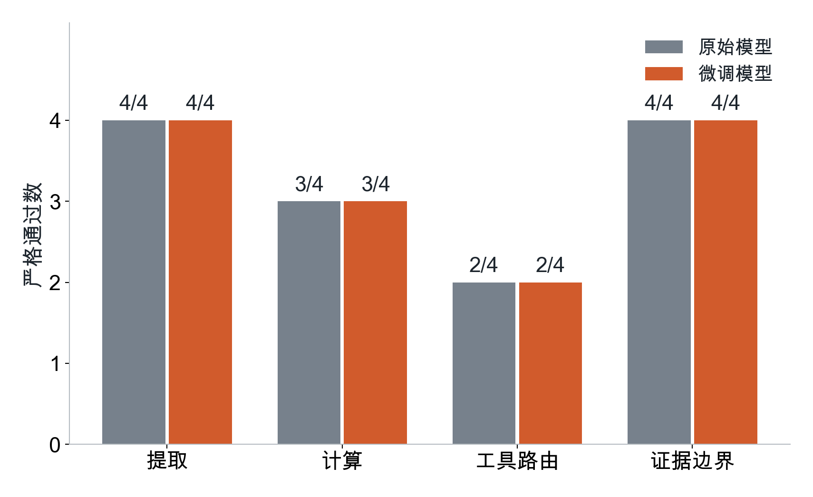
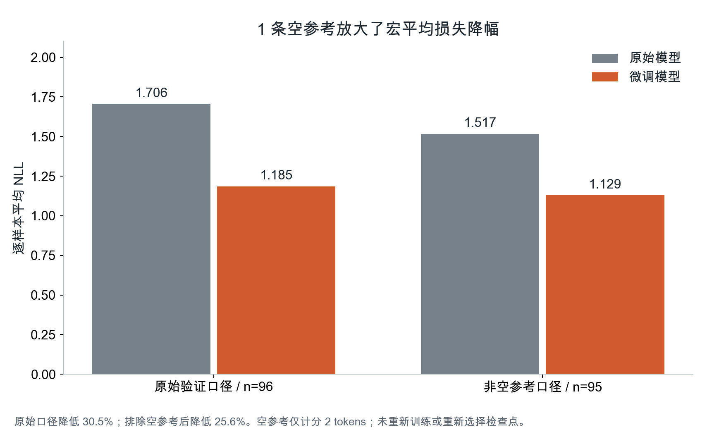
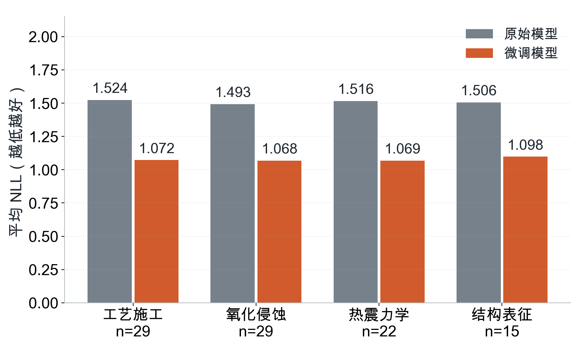
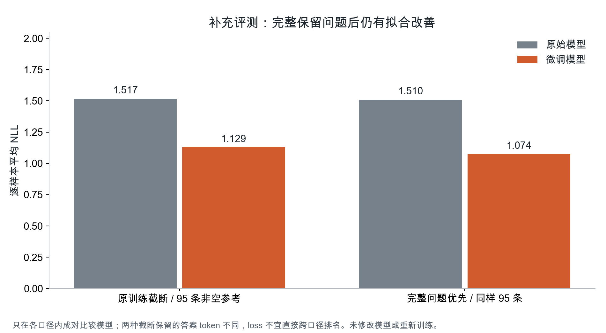
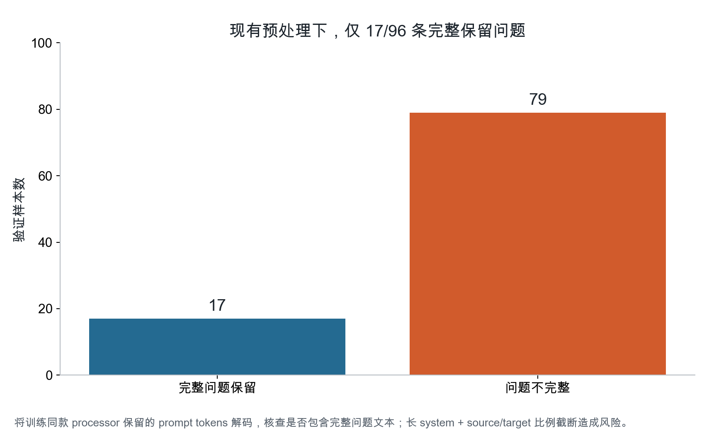